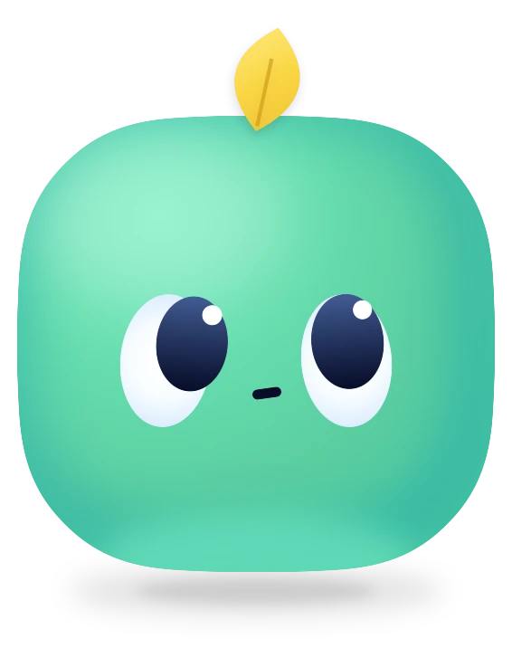
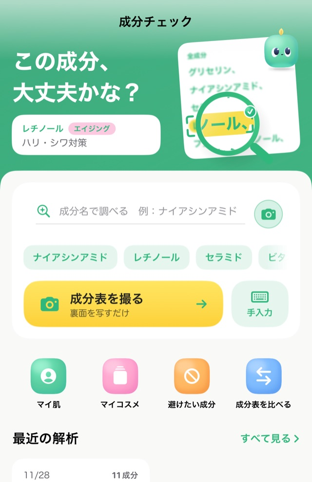
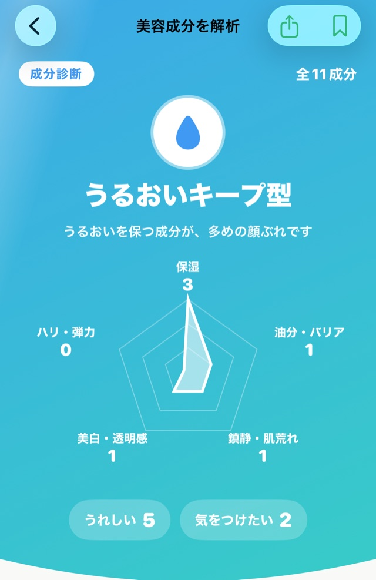
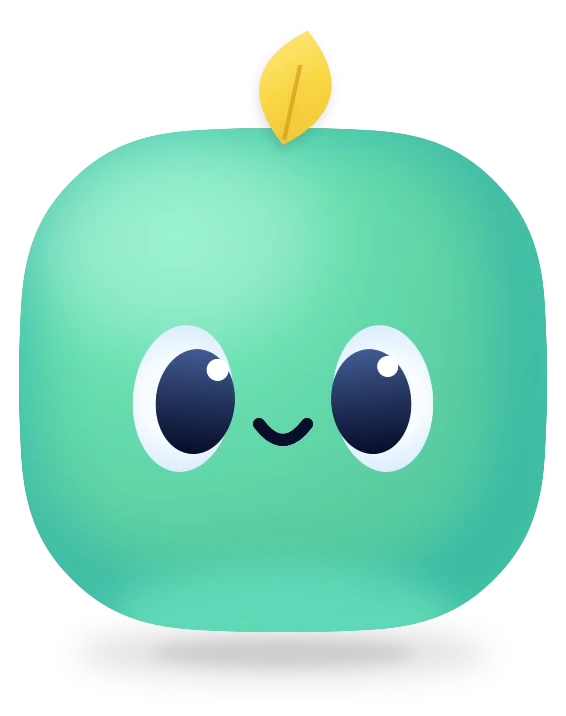
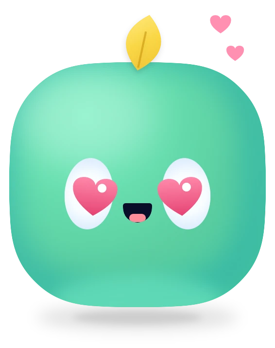
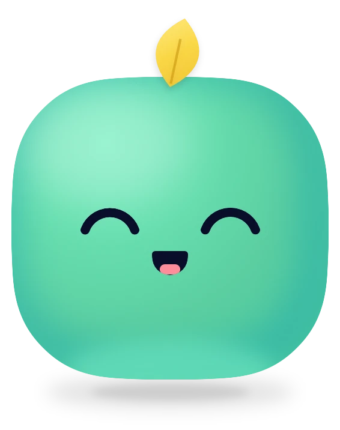

こんなアプリです
-
この成分、大丈夫かな？撮って、たしかめます。

成分チェック
成分表を撮影するだけ。薬用の有効成分、うれしい成分、気をつけたい成分を分けて表示し、成分ごとの働きも解説します（あくまで目安です）。
成分チェックの画面

撮るか、手で入力します 
結果の例（架空の成分表） -
悩みを選ぶと、成分の目安が出ます。

マイ肌と、重ね使いの目安
乾燥・敏感などの悩みを選ぶと、あなたの肌に合いそうな成分と気をつけたい成分の目安が出ます。レチノール・酸・ビタミンCなど、組み合わせに気をつけたい成分もお知らせ（選んだ内容は端末の中だけに保存）。
-
成分表は、名前をつけて保存できます。

マイコスメ
製品の成分表を、名前をつけて保存。製品どうしの重ね使いも確認できます。美容の記事の下では、出てきた成分をタップして解説を見られます。
-
動画と要点を、いっしょに見られます。
動画と記事で、すぐわかる
元の動画と、要点のまとめを一緒に表示。長い動画を見なくても、ポイントを短時間で確認できます。
-
記事の道具は、買い物メモにワンタップで。

買い物メモに、ワンタップ
記事に出てくる道具や消耗品を、買い物メモに追加。店舗を登録すると、近くに来たときにお知らせします（任意）。
-
天気に合わせたおすすめもあります。
探しやすい
カテゴリ・ランキング・タグ・キーワード検索、天気に合わせたおすすめで、今ほしい記事に届きます。
10のカテゴリ
料金
ここからは、料金のご案内です。
記事を読む・保存する・買い物メモを使うなど、基本の機能は無料です。
くらべて、深く調べる
- 成分表の比較（違う成分・共通の成分）
- 製品どうしの重ね使いの確認
- 解析の履歴を50件まで（無料は10件）
ためて、続ける
- マイコスメの保存を30件まで（無料は3件）、使用期限のお知らせ
- 肌の記録と使った製品を重ねる「わたしの傾向」
- 買い物メモを200件まで（無料は15件）、定期の買い物
- お気に入りを整理するコレクション
- 週ごとの振り返りレポート
楽しむ・ひろげる
- おうちのカスタム（じかん・きせかえ・なかま。レベルに応じて増えます）
- 王冠バッジと、ゴールドの縁取り
- ボーナスポイントが2倍
- 投稿は1日5件まで（無料は1件）、コメントし放題（無料は1日1件）、画像つきの投稿
解約はiPhoneの「設定」＞（ご自身の名前）＞「サブスクリプション」からいつでもできます。無料体験は、期間が終わる24時間前までに解約しないと、自動的に月額プランに移ります。詳しくは特定商取引法に基づく表記をご覧ください。
よくある質問
気になることは、こちらをどうぞ。
どの端末で使えますか？
iPhone（iOS 17以降）で使えます。iPadには対応していません。
記事はどうやって作られていますか？
運営者が、YouTubeの動画の内容を、AIの支援で要約・整理して作成しています。内容の正確さには努めていますが、詳しくは元の動画をご確認ください。動画の権利は、各権利者に帰属します。
広告はありますか？
買い物メモの商品検索リンクには、アフィリエイト（広告）を含むものがあります。リンクの近くに、その旨を表示しています。
健康やお金の記事は、信頼してよいですか？
一般的な情報の紹介であり、医療・投資などの専門的な助言ではありません。体調に不安があるときは医師などの専門家に、お金のことはご自身の責任でご判断ください。
アカウントを削除したいです
アプリの「マイページ」＞「プロフィール編集」から、ご自身で削除できます。投稿した記事や画像、コメントなども削除されます。詳しくはプライバシーポリシーをご覧ください。
不適切な投稿を見つけました
ほかの利用者が投稿した記事は、記事の画面の右上のメニュー（旗のアイコン）から、「通報する」「投稿者をミュート」「投稿者をブロック」ができます。コメントは、コメントの「…」から通報やブロックができます。運営が確認し、不適切な投稿は非表示・削除します。そのほかのお困りごとは、お問い合わせフォームからご連絡ください。
動画や記事の削除・修正をお願いしたい（権利者の方）
下記のお問い合わせフォームから、ご連絡ください。内容を確認のうえ、速やかに対応します。
お問い合わせ
お問い合わせフォーム（返信先のメールアドレスの入力が必要です）
サポートの詳細はサポートページをご覧ください。